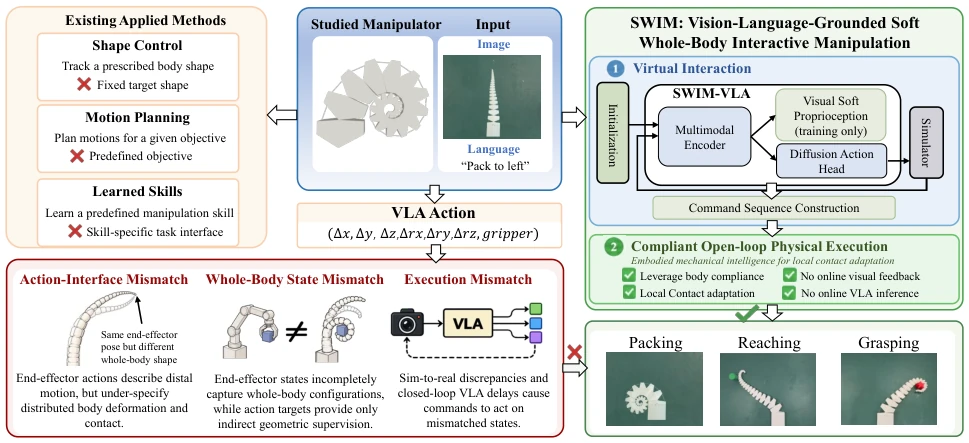
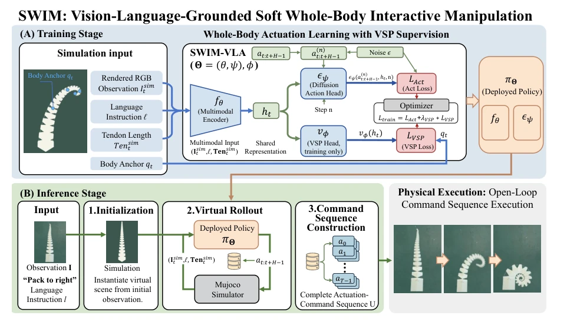
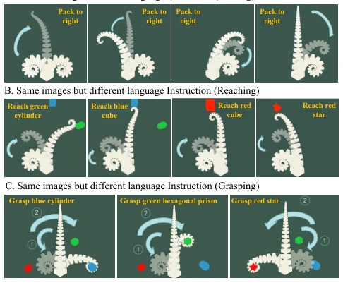
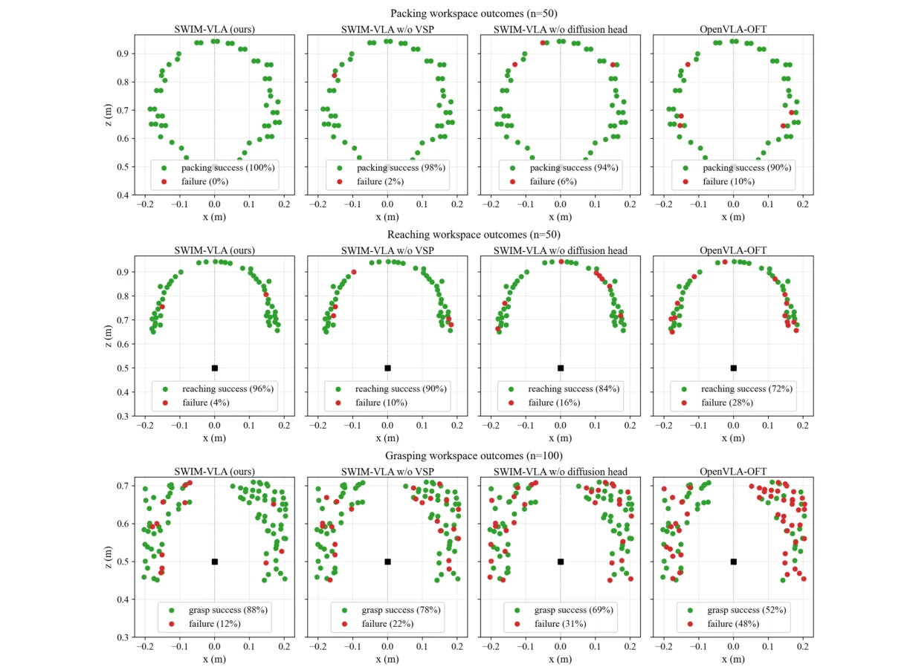
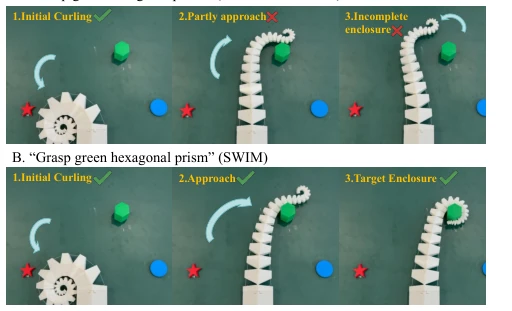

Tingcong Liu, Aye Phyu Phyu Aung, Junjie Xiong, Siyi Ma, Bo An, Ke Wu abspdf
论文点评Review
这篇论文试图用 VLA 解决软体机器人全身操控的“翻译”难题，思路挺清奇。SWIM 框架最大的亮点在于“虚实分离”的部署策略：在仿真里跑完整个动作序列，再开环执行，利用软体本身的柔顺性来掩盖物理世界的误差。这招比直接在线部署聪明多了，毕竟软体机器人的物理模型太难搞了。不过，作者把功劳归结为“具身机械智能”，其实说白了就是利用被动柔顺性做局部接触适应，有点概念包装嫌疑。另外，实验局限在平面操作和固定目标，对于更复杂的 3D 动态场景，这套“虚拟推演 + 开环执行”的套路还能不能扛得住，还得打个问号。总的来说，是个不错的工程化尝试，但理论深度和泛化能力还有提升空间，特别是对于非平面场景的适应性。
This paper attempts to use VLA to solve the "translation" challenge of soft robot whole-body manipulation, with a rather unique approach. The biggest highlight of the SWIM framework lies in its "virtual-real separation" deployment strategy: running the entire action sequence in simulation, then executing in open-loop, utilizing the soft body's inherent compliance to mask errors in the physical world. This approach is much smarter than direct online deployment, after all, the physical models of soft robots are too difficult to handle. However, the authors attribute the success to "embodied mechanical intelligence", which essentially boils down to using passive compliance for local contact adaptation, raising suspicions of conceptual packaging. Additionally, experiments are limited to planar manipulation and fixed targets; for more complex 3D dynamic scenarios, whether this "virtual rollout + open-loop execution" routine can still hold up remains questionable. Overall, it is a decent engineering attempt, but there is room for improvement in theoretical depth and generalization ability, especially regarding adaptability to non-planar scenarios.
Although soft robots can achieve whole-body enveloping grasping through distributed deformation, transforming language instructions and visual scenes into executable whole-body drive commands remains a fundamental challenge. Existing research mostly focuses on shape adjustment [5], [6] or action planning for specific tasks [7], [8]; once instruction-driven, it requires connecting semantic intent with physical execution. Existing Vision-Language-Action (VLA) models mainly target rigid manipulators [11], [12]; directly applying them to soft robots faces three mismatches: first, action interface mismatch, where end-effector motion cannot fully specify distributed deformation; second, whole-body state mismatch, where end-effector state cannot capture high-dimensional body configurations; third, execution mismatch, where sim-to-real differences and online inference latency cause commands to act on incorrect states. Therefore, a framework capable of handling these mismatches and adapting to limited demonstration data is needed.

Fig. 1. Motivation and design principles of SWIM for soft whole-body manipulation.
The SWIM framework is divided into two stages: training and inference. In the training stage, SWIM-VLA is based on the OpenVLA-OFT backbone network, with inputs being rendered RGB images, language instructions, and current tendon length vectors. The core innovations lie in two modules: first, the Diffusion Action Head, used to model the conditional distribution of expert command blocks, capturing multiple feasible whole-body drive strategies under the same task, with the loss function including an action prediction term; second, Visual Soft Embodiment Perception (VSP), which is an auxiliary objective during training, by supervising the spatial coordinates of ordered body anchors, forcing the shared representation to retain whole-body geometric information, solving the problem of indirect geometric supervision under limited demonstration data. In the inference stage, SWIM utilizes the trained policy for virtual rollout. First, initialize the virtual scene based on initial observations, then iteratively query the policy to generate action blocks, execute and update states in simulation, until a complete drive command sequence U is constructed. Finally, this sequence is executed in open-loop on the physical robot, utilizing the soft body's inherent compliance for local contact adaptation, without requiring online visual feedback or policy queries. This design effectively avoids the online latency problem of Sim-to-Real.

Fig. 2. Overview of the SWIM framework. (A) SWIM-VLA is trained from simulated interaction trajectories using diffusion action learning with VSP supervision. (B) At inference, the trained policy performs virtual rollout to construct a complete actuation-command sequence, which is then executed open-loop on the physical robot.
Experiments were conducted on the SpiRob platform, covering packing, grasping, and grasping tasks. In simulation evaluation, SWIM-VLA achieved success rates of 100%, 96%, and 88% in packing, grasping, and grasping tasks respectively, significantly outperforming the OpenVLA-OFT baseline (90%, 72%, 52%). Ablation studies show that removing VSP reduces grasping success rate, and removing the diffusion head also significantly reduces performance, proving the effectiveness of geometric supervision and distribution modeling. Physical deployment compared direct online deployment with SWIM's virtual rollout deployment. SWIM achieved success rates of 100%, 80%, and 75% on hardware, while direct deployment was only 75%, 40%, and 25%. This indicates that virtual rollout combined with open-loop execution effectively alleviates the sim-to-real gap and inference latency issues, although still limited by scene initialization and material property differences.

Fig. 3. Qualitative evaluation of SWIM-VLA.

Fig. 4. Spatial distributions of simulation outcomes. Marker locations represent initial positions for packing and target-object positions for reaching and grasping. Green and red markers indicate successful and failed trials, respectively.

Fig. 6. Physical grasping under the instruction “Grasp green hexagonal prism” using the same trained SWIM-VLA checkpoint. (A) Direct online deployment. (B) SWIM with commands constructed by virtual rollout.